În stînga este slide-ul din curs, în dreapta aceeași figură, calculată în browser din aceleași date. Butonul ▶ modifică parametrul pas cu pas.
Definiția bulei · Creșteri și crahuri în date · Testarea comportamentului exploziv · Legea de putere log-periodică (LPPLS) · Modele cu schimbare de regim · Bule cripto și AI · Studii de caz: speculația imobiliară și crizele previzibile
Definiția bulei
O bulă rațională simulată
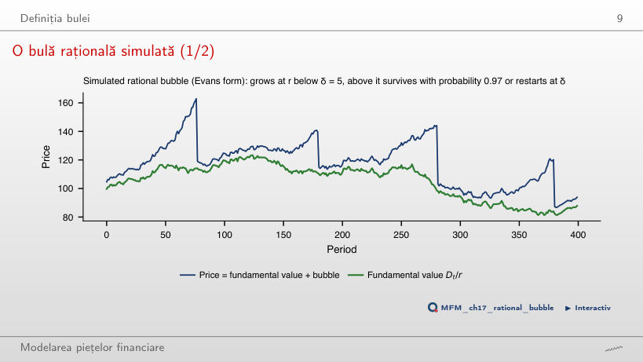
Răspuns
Scade aproximativ de la 4,1% la 1,5% pe perioadă. Pentru Bₜ > δ, rata medie condiționată pe supraviețuire este (1 + r)/π − 1 − (δ/Bₜ)(1 − π)/π; cînd Bₜ este mult mai mare decît δ, ultimul termen este mic. Creșterea medie necondiționată rămîne r = 1%; ea nu este rata condiționată pe supraviețuire. Valorile 33,3 și 200 de perioade, 1/(1 − π), descriu așteptarea geometrică la un risc constant de colaps, nu durata exactă a episoadelor Evans. Cu π = 0,97, în simulare bula s-a spart vizibil de 4 ori, iar la vîrf prețul a fost de 1,46 ori valoarea fundamentală.
Creșteri și crahuri în date
Creșteri și crahuri aliniate la vîrf
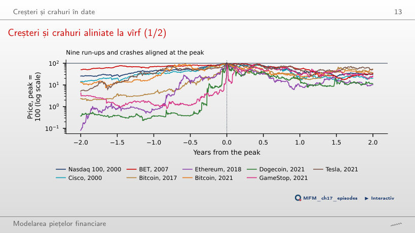
Răspuns
Nu. Selecția după rezultat exclude creșterile care nu s-au încheiat cu un crah, iar eliminarea unui episod extrem nu repară această selecție. Creșterile din cei doi ani dinaintea vîrfului merg de la +97% (BET, 2007) la +124 004% (Ethereum, 2018). Graficul arată scăderea maximă în primii doi ani după vîrf, între −74% (Tesla) și −94% (Ethereum); tabelul din curs folosește patru ani. Pentru Nasdaq 100, acestea sînt −76% și, respectiv, −83%.
Puterea predictivă a creșterilor bruște
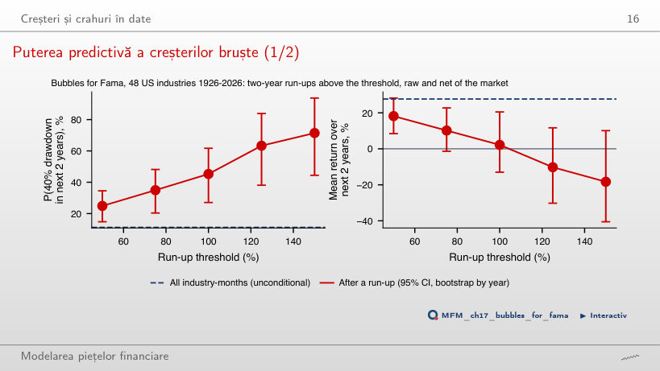
Răspuns
Nu avem dovezi clare că este negativ. Frecvența unui crah și randamentul la sfîrșitul celor doi ani măsoară lucruri diferite. Intervalul conține valori negative și pozitive; nu demonstrează că media este zero. Crahul urmează în 45% din cazuri (53 de episoade în 27 de industrii, CI de 95% [27%, 62%]), față de 11% pentru o lună-industrie oarecare. Selecția cere ca randamentul pe doi ani să depășească pragul atît brut, cît și în exces față de piață, un randament brut de cel puțin 50% pe cinci ani și cel puțin doi ani între episoadele aceleiași industrii.
Testarea comportamentului exploziv
Trei moduri de a alege ferestrele
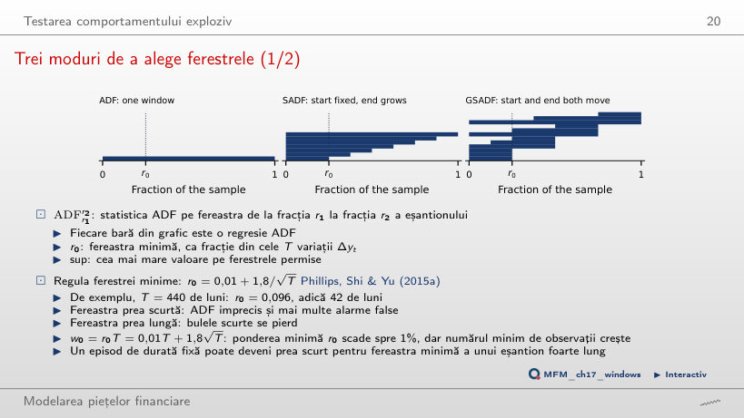
Răspuns
Regula dă r₀ = 0,01 + 1,8/√440 = 0,096, adică w₀ = 42 de luni. SADF parcurge 399 de ferestre (un capăt pentru fiecare), GSADF 79 800 (toate perechile început–sfîrșit), de aici supremul pe aproximativ 80 000 de ferestre.
Distribuțiile sub ipoteza nulă și valorile critice
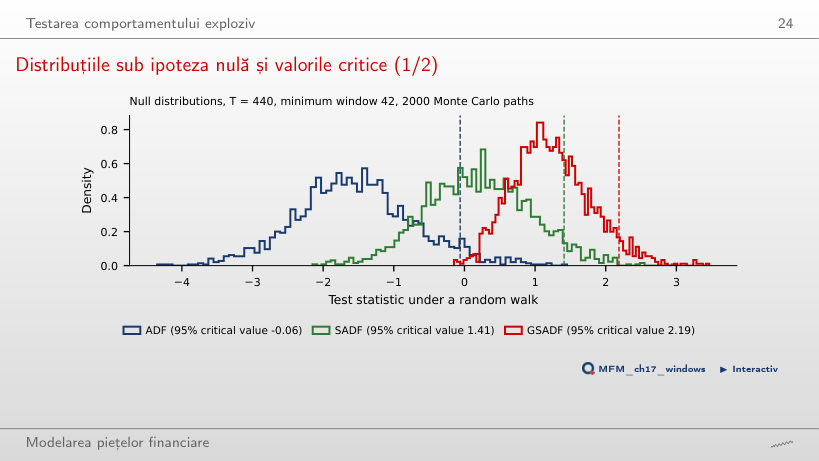
Răspuns
Scade la 1,65. GSADF este maximul a aproximativ 80 000 de statistici ADF pe ferestre suprapuse, iar sub ipoteza nulă maximul multor statistici depășește tipic oricare dintre ele. Cu o fereastră minimă mai lungă sînt mai puține ferestre și valoarea critică coboară (1,65 pentru w₀ = 132); cu una mai scurtă urcă (2,58 pentru w₀ = 22). ADF pe întregul eșantion nu depinde de w₀.
Raportul preț/dividend S&P Composite (Shiller), 1871–2026
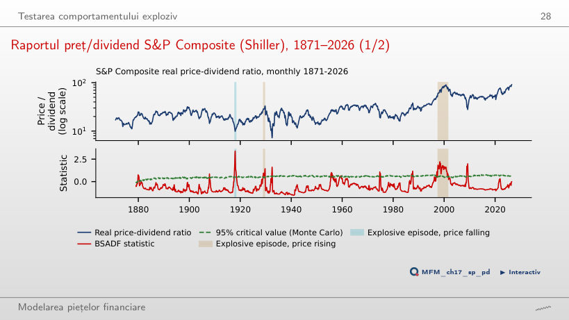
Răspuns
Nu avem un semnal de explozivitate la această dată, în specificația folosită: testul caută accelerarea, nu un nivel ridicat. În mai 2026, BSADF este aproximativ 0,00, sub valoarea critică 0,60. Cu durata minimă L = 8 sînt păstrate trei episoade: aug. 1917–iun. 1918 (o scădere accelerată a raportului), nov. 1928–sept. 1929 și mai 1997–aug. 2001; alte 46 de depășiri formează secvențe mai scurte. Nerespingerea locală nu dovedește absența unei bule. Pe întregul eșantion, GSADF = 3,41 depășește valoarea critică de 95%, 2,39, iar ADF pe întregul eșantion (−1,11) nu detectează nimic.
Bitcoin: episoade explozive
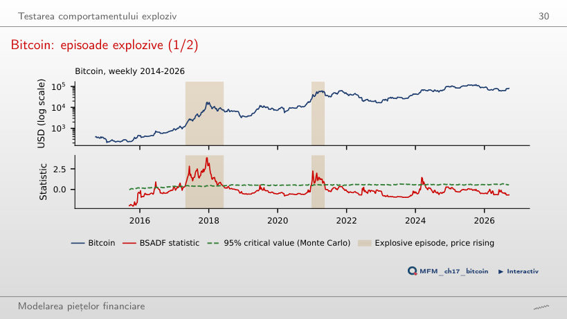
Răspuns
1–15 martie 2024. Cu valorile critice Monte Carlo, BSADF depășește pragul în 1–15 martie (trei săptămîni consecutive) și în 29 martie–5 aprilie (două). Reducerea lui L schimbă filtrul de durată, nu statisticile sau pragurile: secvența de trei depășiri devine episod, cea de două rămîne eliminată, iar pauza dintre ele împiedică reunirea lor. Cu L = 7, episoadele sînt apr. 2017–iun. 2018 și dec. 2020–mai 2021; cu wild bootstrap, mai 2017–ian. 2018 și dec. 2020–feb. 2021. GSADF = 3,85 respinge ipoteza nulă cu ambele valori critice (2,27 și 2,82).
Datarea este un test multiplu: Bitcoin
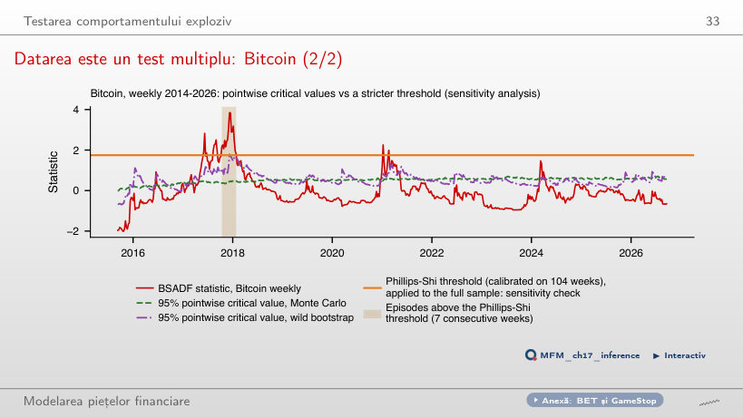
Răspuns
Circa 95%: pe 2 000 de traiectorii random walk, o depășire apare în 95% dintre ele, iar un „episod” de cel puțin șapte depășiri consecutive în 59%. Varianta 5% este nivelul nominal al unei singure comparații. Varianta 19% rezultă din aplicarea pragului Phillips–Shi, calibrat pe 104 săptămîni, întregii istorii: o analiză de sensibilitate, nu un control al erorii pe familie. Pragul este 1,75, față de valori punctuale Monte Carlo de cel mult 0,71; cu el rămîne un singur episod, oct. 2017–ian. 2018.
Legea de putere log-periodică (LPPLS)
LPPLS pe Bitcoin, 2017
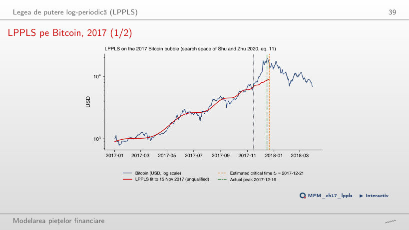
Răspuns
64,3% = (0,42 − 0,15)/0,42. Diferența de 0,27 înseamnă 27 de puncte procentuale, nu o reducere relativă de 27%. Valoarea 35,7% = 0,15/0,42 este partea din eroarea inițială care poate rămîne. Ajustarea plasează tc pe 21 dec. 2017, la 5 zile de vîrf, iar m = 0,95, ω = 10,54 și B = −2,62 sînt în intervalele cerute; trecerea filtrului erorii nu garantează trecerea celorlalte condiții. Nicio ajustare de pe această grilă nu este calificată.
Stabilitatea momentului critic
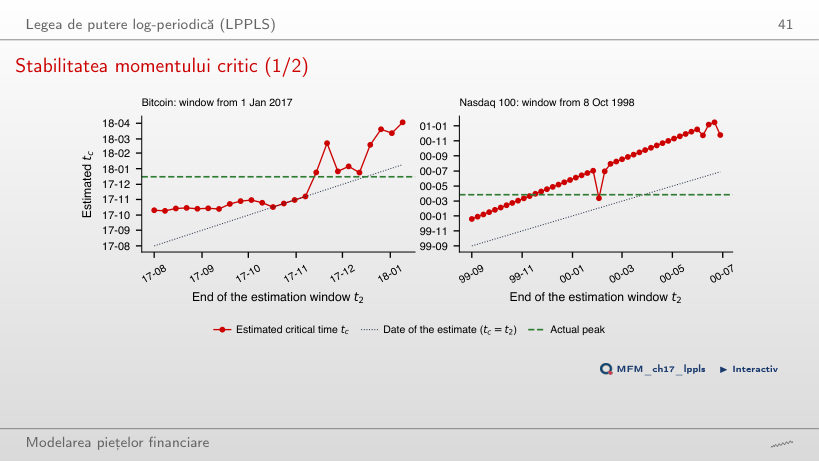
Răspuns
Ponderea ajustărilor de pe această grilă care respectă criteriul retrospectiv. Numitorul are 20 de ajustări, nu 20 de crahuri independente; proporția nu este o probabilitate calibrată a crahului și nici nivelul unui interval de încredere. Cele 20 de ajustări plasează tc între oct. 2017 și feb. 2018, cu o eroare absolută medie de 48 de zile; pentru Nasdaq 100 eroarea medie este 71 de zile. Niciuna dintre aceste ajustări nu este calificată.
Bitcoin: indicatorul de încredere LPPLS
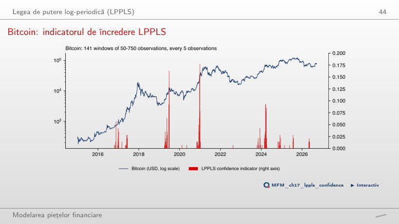
Răspuns
Nu. Scăderea urmează după 22% din cele 82 de semnale și după 37% din datele fără semnal (709 date evaluate). Diferența, −15,5 puncte procentuale, are CI bootstrap pe blocuri [−30,0; 1,8]: dovezile sînt slabe, iar semnul este opus celui așteptat.
LPPLS: filtrele de calificare
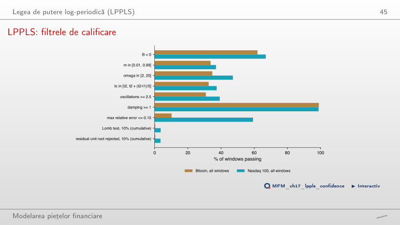
Răspuns
Nu poate fi determinat din aceste două ponderi. 0,4% este intersecția tuturor condițiilor anterioare cu testul Lomb; complementul, 99,6%, nu este rata de respingere a testului Lomb singur. Calculul 1 − 0,4/10,2 = 96,1% atribuie greșit testului Lomb toate eliminările dintre filtrul erorii și rezultatul cumulativ. Luată separat, eroarea relativă de cel mult 0,15 trece în 10% dintre ferestre, față de aproximativ o treime pentru condițiile pe m, ω, tc și numărul de oscilații. După toate condițiile rămîn calificate 0,3% dintre ferestrele Bitcoin și 3,5% dintre cele Nasdaq 100, de unde valorile mici ale indicatorului (cel mult 0,18).
Modele cu schimbare de regim
Nasdaq 100: două regimuri
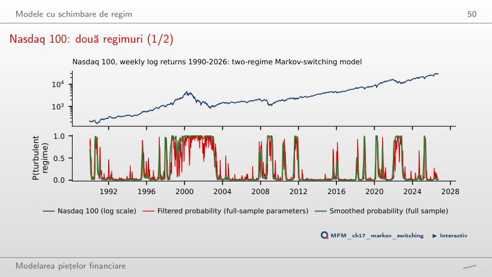
Răspuns
Crește de la aproximativ 23,5 la 200 de săptămîni: durata este 1/(1 − p₂₂), deci crește tot mai repede cînd p₂₂ se apropie de 1 (regimul calm: 75,4 săptămîni). Prima valoare folosește parametrul estimat înainte de rotunjire. Durata nu este proporțională cu p₂₂ și nu depinde de volatilitatea regimului. Probabilitatea filtrată de 0,99 la 31 martie 2000 indică regimul turbulent, nu direcția prețului: în acea săptămînă indicele scăzuse de la 4 692 la 4 398. Parametrii filtrului sînt estimați pe întregul eșantion. După probabilitatea netezită, episodul turbulent din jurul vîrfului începe în iun. 1998.
Numărul de regimuri: un test LR cu bootstrap
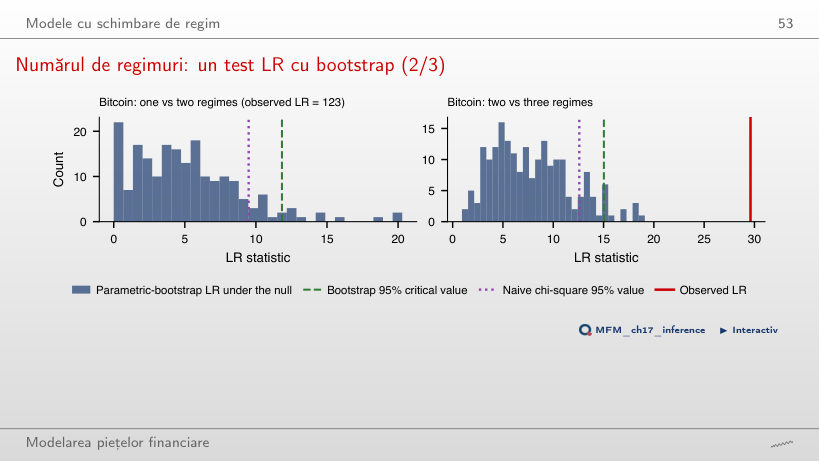
Răspuns
p = (1 + 0)/(99 + 1) = 0,010. Varianta 0 ignoră corecția; 0,005 este minimul posibil cu 199 de replici. Absența depășirilor nu stabilește că probabilitatea din coadă este zero. Sub H₀ probabilitățile de tranziție p₁₁ și p₂₂ nu sînt identificate, deci LR nu urmează o distribuție χ²: cu 199 de replici, valoarea critică bootstrap de 95% este 11,8, față de 9,5 din χ²₄.
Bule cripto și AI
Dot-com și AI
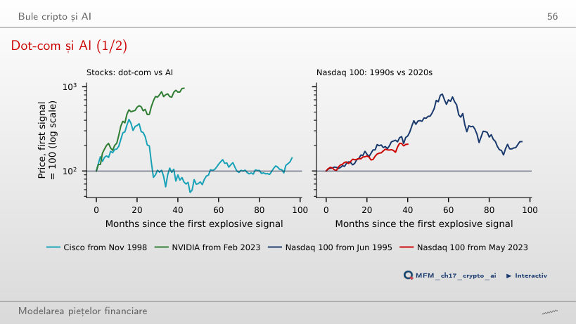
Răspuns
23,8% = 2,6/2,1 − 1. Diferența de 50 de puncte procentuale compară randamentele cumulate, 160% și 110%; 45,5% = 160/110 − 1 raportează randamentele unul la celălalt, nu nivelurile. Primul semnal este în iun. 1995 și, respectiv, mai 2023. În anii 1990 vîrful a venit după 57 de luni, la de 8,2 ori nivelul de la semnal. NVIDIA este la de 9,6 ori după 43 de luni; Cisco a atins vîrful după 16 luni, la de 4,1 ori.
Studii de caz: speculația imobiliară și crizele previzibile
Studiu de caz (3/5): prețuri și volum, 2000–2011
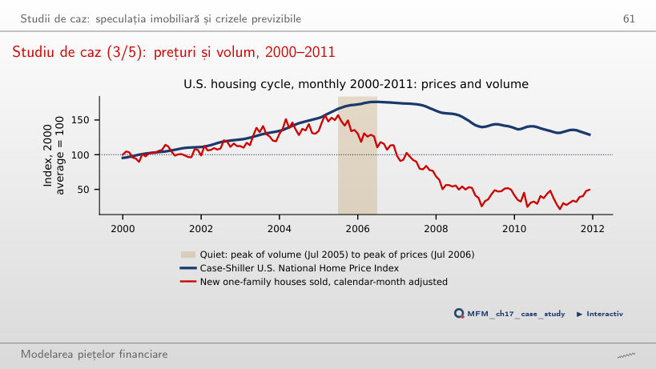
Răspuns
Nu. Data maximului pe întregul interval se identifică retrospectiv; o alarmă trebuie să poată fi calculată la momentul deciziei și apoi evaluată out-of-sample. Ajustarea sezonieră nu rezolvă această problemă. Vînzările de case noi, ajustate pe luna calendaristică, ating vîrful de 157 în iul. 2005, iar prețurile urcă pînă la 176 în iul. 2006, cu vînzările coborîte deja la 110. Cu vînzările neajustate avansul este de 16 luni.
Al doilea studiu de caz (2/4): probabilitatea unei crize după R-zone
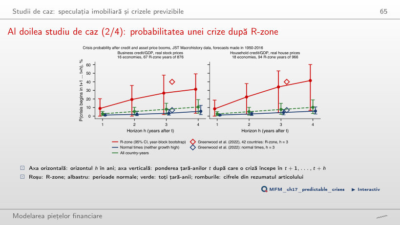
Răspuns
Frecvența crizelor după R-zone crește de la 21% (206 țară-ani) la 50% (30 de țară-ani), iar numărul crizelor precedate de R-zone scade de la 17 la 8 din cele 25. Cele două mărimi au numitori diferiți. La firme: 17% și 37%, cu 16 și 3 din cele 24 de crize. Comparația descrie cele două praguri în acest eșantion; frecvența condiționată nu crește la fiecare pas al grilei (la firme, de la percentila 50 la 55 scade ușor, de la 16,9% la 16,6%). Un prag mai înalt înseamnă mai puține alarme false și mai multe crize ratate.
Prețuri EODHD (Nasdaq 100, BET, Cisco, NVIDIA, Tesla, GameStop, Bitcoin, Ethereum, Dogecoin), pînă la 18 sept. 2026. Raportul preț/dividend S&P Composite: datele publice ale lui Robert J. Shiller, ian. 1871–iun. 2026. 48 de industrii americane: Kenneth French Data Library, iul. 1926–sept. 2026. Locuințe: FRED (CSUSHPINSA, HSN1FNSA). Credit, prețuri și crize: Jordà–Schularick–Taylor Macrohistory Database (R6), 18 economii avansate, 1950–2020. Valorile critice, ajustările LPPLS și modelele Markov-switching sînt calculate cu codul capitolului; în browser se recalculează doar combinațiile lor.